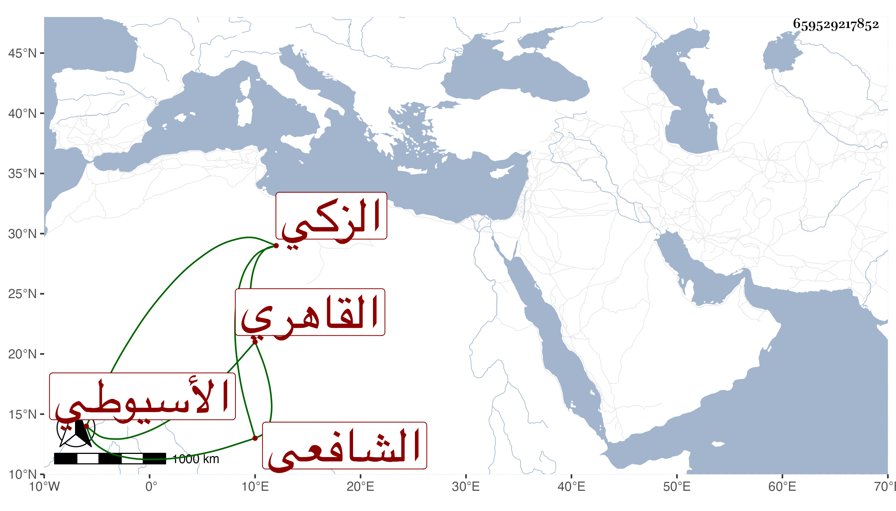

0902Sakhawi.DawLamic.ITO20230111-ara1.EIS1600.659529217852
Biography ID: 659529217852
641
مسلم كمحمد بن علي بن محمد بن أبي بكر الزكي أبو المعالي بن النور الأسيوطي القاهري الشافعي الماضي أبوه . ولد سنة أربع وثمانمائة وحفظ المنهاج وألفية النحو وغيرهما وعرض على جماعة واشتغل وقتا وقرأ على عمه السيد الصلاح محمد بن أبي بكر بن علي السيوطي أخي والده لأمه يسيرا في العربية وسمع علي ابن الكويك صحيح مسلم وغيره وعلى التقي الزبيري الرابع من ثمانيات النجيب وناب في القضاء عن شيخنا فمن بعده لكن امتنع القايات يمن استنابته مع كونه كان من رفقائه في الشهادة بجامع الصالح وصار يلوح بشيء ولما سافر الصدر ابن روق جلس بالجورة وأكثر العلم البلقيني وغيره من التعيين عليه بل باشر أمانة الحكم عند المناوي وقتا وربما استنيب في الخطابة بجامع القلعة لا لفصاحته وكان يبالغ في خدمة القضاة حتى أنه كان يعمل للعلم البلقيني غداة يوم توجه إلى المحمودية فيتكلف لذلك بما استكثره القاضي ومنعه منه ليتوفر وصار بأخرة من قدماء النواب وقد حدث سمع منه الطلبة ، وكان ذا دربة بالأحكام حسن السياسة عارفا بالتوقيع تاما لعقل غير ذاكر لما يكون بينه وبين مستنيبه أو أتباعه . مات في شوال سنة ثلاث وسبعين بعد أن أجاز في استدعاء بعض الأولاد عفا الله عنه وإيانا .
